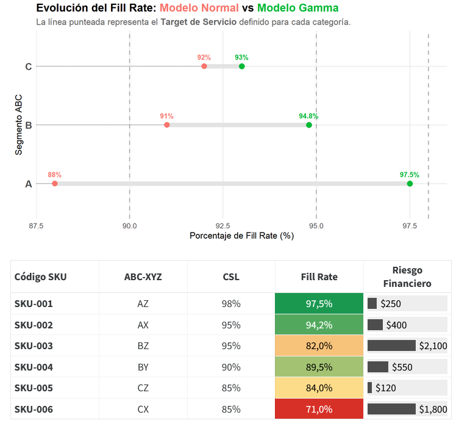
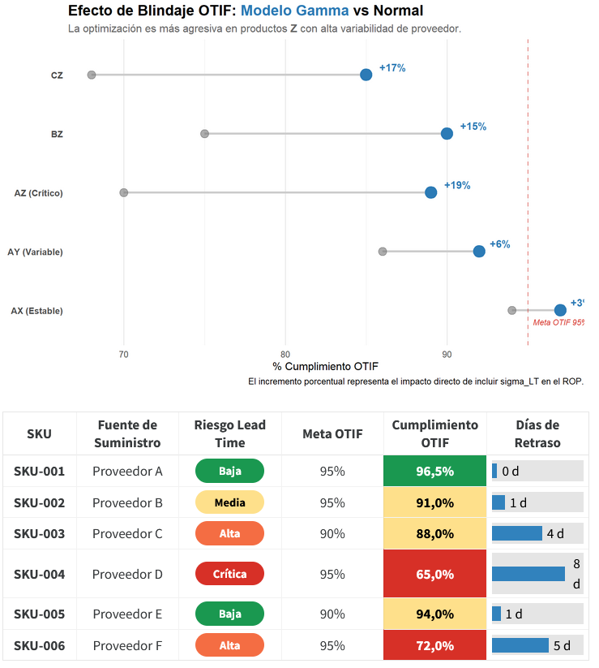

# A tibble: 6 × 7
sku_id D_anual valor_unitario h_unitario eoq pedidos_por_anio
<chr> <dbl> <dbl> <dbl> <dbl> <dbl>
1 SKU-257 7266. 8.72 1.92 1066. 6.82
2 SKU-168 7255. 8.95 1.97 1051. 6.90
3 SKU-053 7238. 9.18 2.02 1037. 6.98
4 SKU-068 7224. 15.8 3.48 789. 9.15
5 SKU-449 7212. 10.4 2.28 974. 7.40
6 SKU-454 7202. 10.8 2.38 954. 7.55
# ℹ 1 more variable: costo_total_anual <dbl>6. El Equilibrio Económico: Dinero vs. Servicio
En la gestión profesional de la cadena de suministro, el “nivel de servicio del 100%” no es un objetivo noble; es un suicidio financiero. Un Experto entiende que el inventario es un balance de tensiones: por un lado, la presión comercial por no perder ni una sola venta, y por otro, la presión financiera por optimizar el flujo de caja y reducir el capital atrapado en el almacén.
En este capítulo, vamos a encontrar el “punto dulce” (sweet spot) donde el costo de tener stock se equilibra con el costo de pedirlo, y entenderemos por qué la eficiencia logística se mide en el balance general de la empresa.
6.1 CSL vs. Fill Rate: No son lo mismo
Como Experto, uno de tus mayores aportes en una reunión de comité es saber distinguir estas dos métricas de rendimiento. Confundirlas lleva a decisiones de compra erróneas.
Cycle Service Level (CSL)
Es la probabilidad de no tener un quiebre de stock durante un ciclo completo de pedido. Es una métrica binaria: o cumpliste con todo el ciclo o fallaste.
- Uso Táctico: Es vital en entornos de manufactura o ensamble. Si falta un solo perno de un centavo, la línea de producción de un millón de dólares se detiene. Aquí no importa cuánto faltó, sino que algo faltó.
Fill Rate (\(P_2\))
Es el porcentaje de la demanda total que lograste satisfacer directamente con el stock disponible. A diferencia del CSL, esta métrica es de volumen.
- Uso Táctico: Es la métrica reina en el Retail y Consumo Masivo. Si un cliente quiere 10 cajas y le entregas 9, tu Fill Rate es del 90%, aunque técnicamente hayas “quebrado”. El Fill Rate tiene un impacto directo en el Bottom Line y en la satisfacción real del consumidor final.
6.2 SLO: El Compromiso de Servicio (Service Level Objective)
Para un Crack de Supply Chain, el nivel de servicio no es solo una fórmula; es un acuerdo de caballeros con el resto de la organización. Aquí es donde introducimos el concepto de SLO.
¿Qué es el SLO?
El SLO (Service Level Objective) es el objetivo específico que el equipo de Supply Chain se compromete a alcanzar. Por ejemplo: “Mantener un Fill Rate del 98% para los productos Clase A”.
Para entenderlo bien, debemos conocer la triada del servicio:
SLI (Service Level Indicator): La realidad. Es el dato que sale del sistema hoy (ej. “Hoy tuvimos un 94%”).
SLO (Service Level Objective): La meta. Es lo que prometiste (ej. “Debemos estar al 98%”).
SLA (Service Level Agreement): El contrato. Es lo que se firma con el cliente externo y que suele tener penalizaciones económicas si no se cumple el SLO.
El “Presupuesto de Error” (Error Budget)
Un concepto avanzado que tomamos de la ingeniería de confiabilidad es el Presupuesto de Error. Si tu SLO es del 98%, tienes un “presupuesto” de 2% de quiebres permitidos.
- Estrategia: Si al final del mes te sobra presupuesto de error, significa que quizás estás teniendo demasiado stock. Un Experto usa ese margen para optimizar pedidos y reducir inventario. Si te pasaste del presupuesto, es hora de revisar si tu ROP (Cap. 1) necesita un ajuste al alza.

6.3 EOQ: El Lote Económico (Wilson) y la Ley de la Raíz Cuadrada
El EOQ responde a la pregunta fundamental: “¿Cuánto debo pedir para que el costo total de la logística sea mínimo?”. Un pedido muy grande baja el costo de fletes pero dispara el costo de almacenamiento; un pedido muy pequeño satura la operación.
\[ EOQ = \sqrt{\frac{2 \cdot D_{anual} \cdot S}{h}} \]
El origen de las variables:
\(D_{anual}\): Demanda total al año. La obtenemos de nuestra Fase 0.
\(S\) (Costo de Pedido): El costo administrativo de emitir la orden y el flete fijo.
\(h\) (Costo de Mantener): El Working Capital (WACC + almacenamiento + riesgo).
ImportantLa Ley de la Raíz Cuadrada
Si tu demanda se duplica, tu lote de compra no debe duplicarse, solo debe crecer un 41% (\(\sqrt{2}\)). Esta es la clave de la economía de escala en inventarios.

6.4 La Curva de Compromiso (Trade-off)
La relación entre el nivel de servicio y la inversión en inventario no es lineal, es exponencial.
TipEl Ojo del Experto
Subir del 95% al 99% de nivel de servicio puede requerir duplicar la inversión en stock de seguridad para ganar solo un 4% de disponibilidad. Tu labor es presentarle al Directorio el “menú de costos”:
“Lograr un SLO del 95% cuesta $1M.”
“Lograr un SLO del 98% cuesta $1.8M.” ¿Vale la pena esa inversión por un 3% extra? Esa es la discusión que debes liderar.
6.5 Consecuencias del Desequilibrio
Ignorar el equilibrio económico produce dos patologías empresariales:
La Parálisis por Exceso: El almacén está lleno de productos con baja rotación. Es el costo de un SLO poco realista o una obsesión con el descuento por volumen.
La Fatiga Operativa: Compras realiza pedidos todos los días para “ahorrar espacio”, pero el costo de transporte devora el margen.
Conclusión del Capítulo 6
El nivel de servicio es una decisión financiera disfrazada de logística. Has aprendido que el SLO es el contrato que rige tu motor y que tu labor como Experto es optimizar el uso del capital. Ahora que dominamos el cuánto y el cuándo pedir, estamos listos para enfrentar un reto mayor: ¿qué sucede cuando el producto tiene fecha de expiración? Lo veremos en el Capítulo 7: Gestión FEFO.